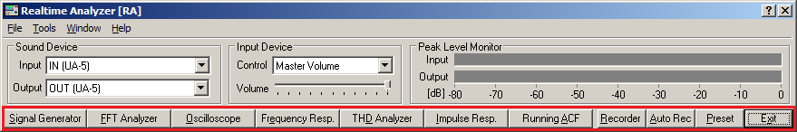

DSSF3 > RA > Reference Manual > Main Window

| Buttons | Descriptions |
|---|---|
| Signal Generator | Tone, noise, sweep and pulse is generated as a stereo signal. As for tone, sinusoidal, triangle, square, and saw-tooth wave can be chosen. Each channel can generate different signals with specified frequencies. White, pink, and brown noise can be chosen. Sweep is a tone signal whose frequency is varied continuously. Pulse signal is generated with specified number of time, duration and interval. |
| FFT Analyzer | Two channels spectrum analyzer, 1/1 to 1/24 octave band analyzer, 3D display (TEF or waterfall), correlation meter (auto- and cross-), phase meter, and spectrogram can be chosen. |
| Oscilloscope | Two channels oscilloscope. Auto triggering, level adjustment, X-Y mode (Lissajous pattern). |
| Frequency Response | The measurement using a sweep signal, spot frequency, and pink noise is possible. |
| THD Analyzer | Total Harmonic Distortion analyzer. Manual measurement of up to 30th harmonics, level sweep, and frequency sweep measurements are available. |
| Impulse Response | The impulse response of a room is measured automatically with MLS (Maximum Length Sequence) or TSP (Time Stretched Pulse) methods. Measured impulse response can be saved as wav files. Impulse response files (only wav) measured by the other measurement system can be imported. |
| Running ACF | The running ACF (autocorrelation function) and CCF (cross-correlation function) are measured. It is a time domain sound analysis method. Sound can be recorded up to 30 seconds. Recorded sound can be played and saved by wav. format. A wav. format sound file can be imported. |
| Recorder | Sound recorder and player that cooperates with all analyzer functions. |
| Auto Rec | Save the measured sound data to automatically set the directory. |
| Preset | Setup of RA can be stored as a "preset." By loading a preset, all settings of RA will be recovered. Each preset is named and comment can be added. This function not only shortens the preparation time before the measurement, but also reduces a mistake. It is highly recommended to use preset for precise measurement. |
| Exit | Real time analyzer program finishes. |
DSSF3 > RA > Reference Manual > Main Window